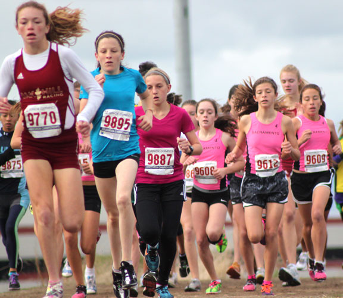
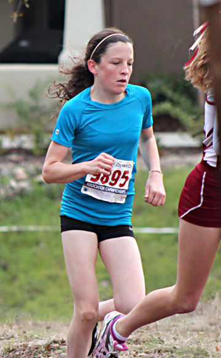

PA/USATF's Chloe Pigg
Youth XC Standout
by Bob Burns

Chloe Pigg, 2nd from the left.
There are pluses and minuses to living far off the beaten track.
For Chloe Pigg, a 14-year-old distance-running standout from McKinleyville, up in the northwestern corner of California, the disadvantage of living in such a remote location is that she has to trek several hundred miles to find girls who can give her a race.
The advantages include long runs along the beautiful beach, bracing ocean air to breathe, countless forest trails, and a coach who has already demonstrated that living in an isolated location doesn’t preclude success. Her coach is her father, Mike Pigg, a world-champion triathlete who grew up in Humboldt County.
Just as her father searched far and wide for top competition, Chloe traveled more than 3,000 miles for her first national championship. Competing in the youth girls division of the USATF National Junior Olympic Cross Country Championships in Myrtle Beach, South Carolina, she covered the 4-kilometer course in 14 minutes, 6.79 seconds, finishing more than 15 seconds ahead of the runner-up, Logan Morris of Spartanburg, S.C.
“It was a really good feeling,” Pigg said. “People were cheering the whole way. It was exciting to be able to run against such good competition.”
The eighth-grader at Jacoby Creek School in Arcata was the lone Pacific Association runner to claim an individual title at the Junior Olympics. Pigg earlier won PAUSATF and Region 14 titles by employing the same successful strategy – relying on her strength to pull away from the lead pack in the second half of the race.
At Myrtle Beach, Pigg was a bit overwhelmed by the 270 runners crowded together in the call tent before the race. There was some jostling as the huge field left the starting line on the Whispering Pines Golf Course, but Pigg quickly settled into a rhythm at the front of the pack. After passing the mile mark in 5:32, Pigg pulled away from the field on the second 2-kilometer loop.
“I was pretty confident about getting in the top three because I had won regionals and we have a tough region,” Pigg said. “At Junior Olympics, I was with three other girls after the first lap and then just took off on the second lap. I felt really good the whole race.”
That wasn’t the case in 2009, when she competed at the Junior Olympics in Reno. Running with a head cold in a hellacious snowstorm, Chloe finished sixth in the midget girls division.
“It’s nice that she was able to come back this year and fire on cylinders,” Mike Pigg said.
Mike Pigg describes himself as Chloe’s “father, coach and masseuse.” He performs the roles with the same dedication that characterized his career as one of the triathlon’s pioneers in the late 1980s and 1990s. Pigg won the U.S. Triathlon Series four times and was a two-time U.S. pro champion. In 1999, the Times-Standard newspaper in Eureka named Pigg Humboldt County’s Athlete of the Century.
In his heyday, Mike’s weekly training load featured 225 to 300 miles of cycling, 30 to 50 miles of running and 15,000 to 25,000 yards of swimming. He takes a much more restrained approach to his daughter’s nascent running career. She runs four days a week and swims a couple more.
“The main goal for me is to avoid burnout,” Mike Pigg said. “She trains with me now, but in high school, she’ll have a lot of friends around her in a team atmosphere. Friendship is part of the enjoyment of running.”
Asked what it’s like putting in the miles alongside her celebrated dad, Chloe said, “I like it, but sometimes it’s kind of boring. I’m really looking forward to high school.”
Mike and his wife, Marci, are lifelong residents of Humboldt County. Mike’s father taught chemistry at Arcata High for 27 years. Mike’s and Marci’s two children – Chloe and her twin brother Triston– will follow in the family footsteps.
“Arcata High School is in our blood,” said Mike, who now works in real estate with his wife.
Triston runs for his junior high team but isn’t as serious about it as his twin sister. Chloe was in the second grade when her father caught his first glimpse of her talent.
“She was running the 200 meters and had perfect form,” Mike said. “I thought, oh my gosh, she can run.”
Chloe clocked a 5:01 mile as a sixth-grader. She clocked another 5:01 last spring but hasn’t ventured down the Junior Olympic path in track, at least not yet. She much prefers cross country to track.
“Cross country is a lot more exciting,” she said. “I like the variety, and there are a lot of really good places to train up here.”
Her goals are to break that nettlesome five-minute barrier in the mile this spring and to qualify for the state cross country championships next fall as an Arcata High freshman.
“I’d like to get a scholarship to a good running college, maybe Oregon or Colorado,” she said.
When her father was one of the biggest three or four names in the triathlon world, he would train three months each year in Boulder, Colo.. The rest of the time, he made Humboldt County his home base, putting in the solitary miles and hours that made him one of the best-paid men in the sport.
“I’ve always loved this area – clean air, trees, breezes coming off the ocean,” Mike said. “We have three miles of a perfectly flat beach. We’re blessed up here as far as running.”
Chloe says she hasn’t thought about trying a triathlon. Her father’s mind sifts through his own experiences, figuring out ways to help her improve while avoiding the danger of early burnout. He speaks of devising a less-is-more training program.
“We’re going to try some different things,” Mike said. “I’d like to answer the question, ‘How little can you do and be fast?’ Use swimming or a bike ride on the road as a way to recover from running – that sort of thing.”
Chloe, meanwhile, does push-ups and sit-ups on her own each night. She sounds willing to put in the miles, on foot and in her parents’ car, to reach her goals.
“I like the feeling of having people around when you’re competing and trying to see if you can beat them,” she said. “I also like the places running can take me.”
